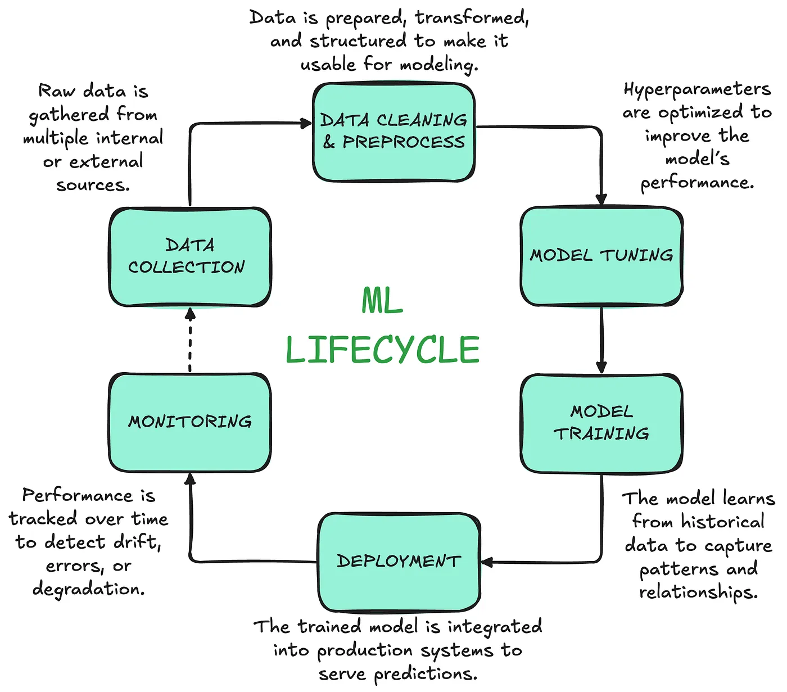
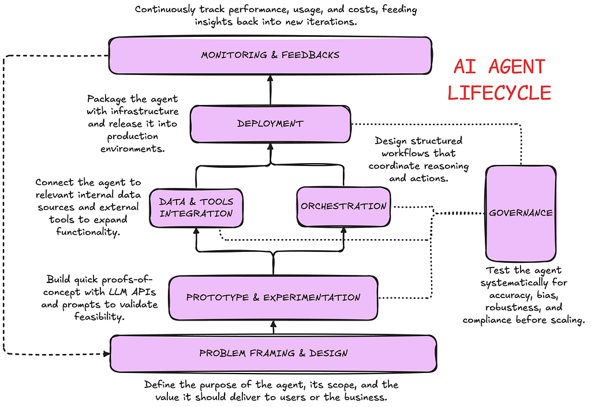

From modeling to orchestration: the Data Scientist's journey in the age of GenAI
How AI agents, AutoML, and off-the-shelf solutions are reshaping what it means to be a data scientist — from model artisan to system architect.
How AI agents, AutoML, and off-the-shelf solutions are reshaping what it means to build intelligence, and what skills matter most now.
Alessandro Garavaglia | 4 min read | Sep 17, 2025
I have been working in data science for about ten years, and over this decade I've seen our craft change multiple times: from the early days of manual feature engineering and parameters tuning, the establishment of MLOps practices, and now to the rise of large language models (LLMs) and AI agents.
One shift has become particularly clear to me: our focus is moving away from building models from scratch and toward orchestrating intelligent systems.
The artisan phase of data science
For many years, the "core" of data science meant building models by hand. Classification, regression, and forecasting were our bread and butter.
We spent weeks on feature engineering, hyperparameters tuning, distributions analysis and careful validation. Creating a high-performing model was a kind of scientific craftsmanship, and it was what gave data scientists their identity and prestige.

The development process of a classic ML model, from data exploration to monitoring of performances. The development is usually executed as a cycle, iteratively improving all the steps.
The commoditization of modeling
That phase didn't last forever. Today, many parts of model building are being commoditized:
- AutoML platforms can deliver good classification and regression models without heavy manual work;
- Cloud providers offer forecasting, anomaly detection, and recommendation models as off-the-shelf APIs;
- For most business cases, "good enough" often beats "state of the art".
Of course, there are still companies, particularly in specialized industries or research-driven organizations, where data scientists work on highly customized and technically complex solutions. These represent though a relatively small fraction of enterprises compared to the broader landscape of data science teams.
The LLM revolution and the rise of agents
The arrival of LLMs accelerated this shift even further. With LLMs, the real value is no longer in the model itself but in how you orchestrate it:
- Connecting it to data sources;
- Chaining it with external APIs;
- Equipping it with reasoning strategies;
- Embedding it into business workflows.
We've moved from model training to system design, where the key question is: how can this model (or set of models) become part of a larger, useful system?

In agentic AI development and execution of experimentation is drastically reduced, but development is less linear.
The new wave: click-and-drop workflows
On top of LLMs, we're also seeing a rapid rise of drag-and-drop tools for building agents and workflows. They allow anyone to visually stitch together components into something that looks like an intelligent system.
While this democratization has value, it also comes with risks:
- Solutions that are not versioned;
- Workflows that are hard to trace;
- Fragile systems that no one can maintain.
This is similar to how software development looked before the advent of version control and modern engineering practices. AI agents will also require the same level of rigor: reproducibility, monitoring, governance, and collaboration are not optional.
New winners in the team hierarchy
In this evolving ecosystem, I've noticed how certain roles and skill sets have gained visibility:
- Containerization & deployment;
- API design and management;
- CI/CD pipelines for ML and AI;
- Workflow orchestration and scheduling;
- Solutions and systems architecture.
These are not traditionally part of the standard data scientist toolbox. They align more with the expertise of MLOps engineers, cloud engineers, and platform specialists.
At the same time, I sometimes wonder about the role of the "classic" data scientist, the one mostly focused on building bespoke models from scratch. There is a risk that, in this new ecosystem where orchestration and deployment matter more than hand-crafted modeling, such profiles could end up playing a more marginal role.
I don't see this as inevitable, but it's a reflection worth keeping in mind: unless data scientists adapt to this system-centric landscape, they may find themselves less central than they used to be.
What data science still brings to the table
That said, there are areas where data science expertise remains irreplaceable:
- Critical evaluation: knowing when an off-the-shelf solution is enough, and when a custom model is worth the investment.
- Assessment and governance: designing evaluation frameworks, monitoring drift, testing for bias, and ensuring explainability. These tasks require statistical rigor and domain understanding, and they are unlikely to be fully automated or taken over by infra roles.
- Domain intuition: the subtle understanding of data context that no agent can replicate.
From model artisans to system architects
From my point of view, the balance of work in data science has changed dramatically. Less time is spent on building models line by line, and more time is now devoted to integrating APIs, LLMs, and services into robust workflows.
The skills that are emerging as crucial today are:
- Comfort with cloud platforms and deployment pipelines;
- Ability to reason about data quality and monitoring;
- A product mindset that connects technical decisions with business outcomes.
The role of the data scientist is not disappearing but transforming. We are moving from being model artisans to becoming system architects.
For data scientists, the challenge is not to cling to old definitions of the job, but to embrace this new hybrid identity: part statistician, part engineer, part product thinker.
And if we succeed, we'll remain at the center of how intelligent systems are designed, deployed, and trusted.
This post is not meant to provide definitive answers or prescriptive guidance. Its goal is to spark reflections and discussions on the topic.
The views expressed are my own.
Tags: AI, Data Science, MLOps, Careers